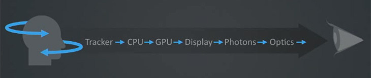
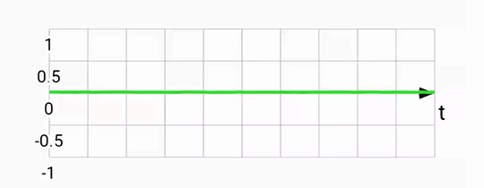
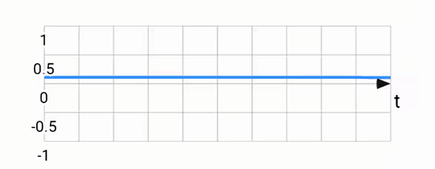
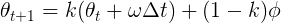
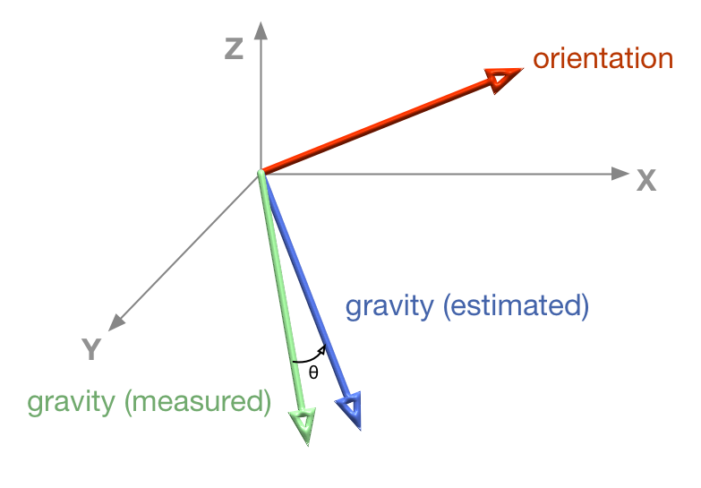
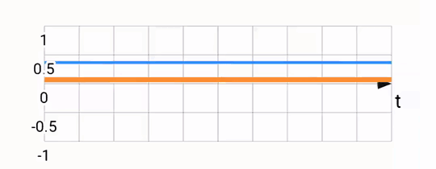
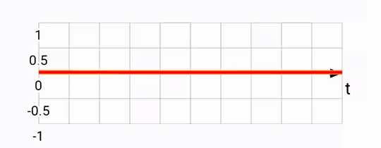
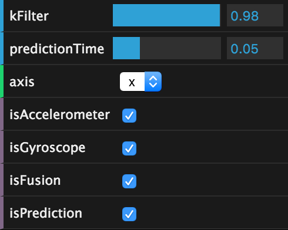

Sensor fusion and motion prediction
A major technical challenge for VR is to make head tracking as good as possible. The metric that matters is called motion-to-photon latency. For mobile VR purposes, this is the time that it takes for a user's head rotation to be fully reflected in the rendered content.

The simplest way to get up-and-running with head tracking on the web today is
to use the deviceorientation events, which are generally well supported across
most browsers. However, this approach suffers from several drawbacks which can
be remedied by implementing our own sensor fusion. We can do even better by
predicting head orientation from the gyroscope.
I'll dig into these techniques and their open web implementations. Everything discussed in this post is implemented and available open source as part of the WebVR Polyfill project. If you want to skip ahead, check out the latest head tracker in action, and play around with this motion sensor visualizer.
The trouble with device orientation
The web provides an easy solution for head tracking through the
deviceorientation event, which gives Euler angles corresponding to your
phone's 3-DOF orientation in space. This orientation is calculated through an
undisclosed algorithm. Until very recently, the spec didn't
even specify whether or not these events should give your phone's orientation in
relation to north or not. However, recently accepted spec
changes make this behavior more standard across
browsers.
In Android, the JavaScript deviceorientation event was implemented using
Sensor.TYPE_ORIENTATION in Android, which fuses accelerometer, gyroscope and
magnetometer sensors together to give a North-aligned orientation. The trouble
is that the magnetometer's estimate of magnetic North is easily affected by
external metallic objects. On many devices, the North estimate continually
changes, even when you are not looking around. This breaks the correspondence
between motion and display, a recipe for disaster.
Another issue in some implementations is that the deviceorientation sensor
ramps up and down in firing rate depending on the speed of the phone's rotation.
Try opening up this diagnostic page on Android. This variation in
sensor update rate is not good for maintaining a reliable head track.
To top it off, a recent regression in Android M broke
deviceorientation for Nexus 5s. Why do bad bugs happen to good people?
What is to be done?
We implement our own sensor fusion with devicemotion, which provides lower
level accelerometer & gyroscope events. These fire at a regular rate. When you
search for "sensor fusion", jumping into the rabbit hole will quickly take you
into the realm of Kalman Filters. This is a bit more firepower than we will need
for the moment, although I did finally get a better sense of the concept with
the help of a boring but understandable explanation.
Luckily, there are simpler alternatives such as the Complementary Filter, which is what we'll talk about next.
Your sensing smartphone
Let us start with the basics: sensors. There are three fundamental motion tracking sensors in your smartphone.
Accelerometers measure any acceleration, returning a vector in the phone's reference frame. Usually this vector points down, towards the center of the earth, but other accelerations (eg. linear ones as you move your phone) are also captured. The output from an accelerometer is quite noisy by virtue of how the sensor works. Here's a plot of the rotation around the X-axis according to an accelerometer:

Gyroscopes measure rotations, returning an angular rotation vector also in the phone's reference frame. Output from the gyro is quite smooth, and very responsive to small rotations. The gyro can be used to estimate pose by keeping track of the current pose and adjusting it every timestep, with every new gyro reading. This integration works well, but suffers from drift. If you were to place your phone flat and capture it's gyro-based position, then pick it up, rotate it a bunch, and place it flat again, its integrated gyro position might be quite different from what it was before due to the accumulation of errors from the sensor. Rotation around the X-axis according to a gyroscope:

Magnetometers measure magnetic fields, returning a vector corresponding to the cumulative magnetic field due to any nearby magnets (including the Earth). This sensor acts like a compass, giving an orientation estimate of the phone. This is incredibly useful combined with the accelerometer, which provides no information about the phone's yaw. Magnetometers are affected not by the Earth, but by anything with a magnetic field, including strategically placed permanent magnets and also ferromagnetic metals which are often found in substantial quantities in certain environments.
Intuition: why do we need sensor fusion?
Each sensor has its own strengths and weaknesses. Gyroscopes have no idea where they are in relation to the world, while accelerometers are very noisy and can never provide a yaw estimate. The idea of sensor fusion is to take readings from each sensor and provide a more useful result which combines the strengths of each. The resulting fused stream is greater than the sum of its parts.
There are many ways of fusing sensors into one stream. Which sensors you fuse, and which algorithmic approach you choose should depend on the usecase. The accelerometer-gyroscope-magnetometer sensor fusion provided by the system tries really hard to generate something useful. But as it turns out, it is not great for VR head tracking. The selected sensors are the wrong ones, and the output is not sensitive enough to small head movements.
In VR, drifting away from true north is often fine since you aren't looking at the real world anyway. So there's no need to fuse with magnetometer. Reducing absolute drift is, of course, still desirable in some cases. If you are sitting in an armchair, maintaining alignment with the front of your chair is critical, otherwise you will find yourself having to crank your neck too much just to continue looking forward in the virtual world. For the time being, we ignore this problem.
Building a complementary filter
The complementary filter takes advantage of the long term accuracy of the accelerometer, while mitigating the noise in the sensor by relying on the gyroscope in the short term. The filter is called complementary because mathematically, it can be expressed as a weighted sum of the two sensor streams:

This approach relies on the gyroscope for angular updates to head orientation, but corrects for gyro drift by taking into account where measured gravity is according to the accelerometer.
Initially inspired by Pieter's explanation, I built this filter by calculating roll and pitch from the accelerometer and gyroscope, but quickly ran into issues with gimbal lock. A better approach is to use quaternions to represent orientation, which do not suffer from this problem, and are ideal for thinking about rotations in 3D. Quaternions are complex (ha!) so I won't go into much detail here beyond linking to a decent primer on the topic. Happily, quaternions are a useful tool even without fully understanding the theory, and many implementations exist. For this filter, I used the one found in THREE.js.
The first task is to express the accelerometer vector as a quaternion rotation,
which we use to initialize the orientation estimate (see
ComplementaryFilter.accelToQuaternion_).
quat.setFromUnitVectors(new THREE.Vector3(0, 0, -1), normAccel);
Every time we get new sensor data, calculate the instantaneous change in
orientation from the gyroscope. Again, we convert to a quaternion, as follows
(see: ComplementaryFilter.gyroToQuaternionDelta_):
quat.setFromAxisAngle(gyroNorm, gyro.length() * dt);
Now we update the orientation estimate with the quaternion delta. This is a quaternion multiplication:
this.filterQ.copy(this.previousFilterQ);
this.filterQ.multiply(gyroDeltaQ);
Next, calculate the estimated gravity from the current orientation and compare it to the gravity from the accelerometer, getting the quaternion delta.

deltaQ.setFromUnitVectors(this.estimatedGravity, this.measuredGravity);
Now we can calculate the target orientation based on the measured gravity, and then perform a spherical linear interpolation (SLERP). How much to slerp depends on that constant I mentioned before. If we don't slerp at all, we will end up only using the gyroscope. If we slerp all the way to the target, we will end up ignoring the gyroscope completely and only using the accelerometer. In THREE parlance:
this.filterQ.slerp(targetQ, 1 - this.kFilter);
Sanity checking the result, we expect the filter output to be roughly parallel to the gyroscope readings, but to align with the accelerometer reading over the long term. Below, you can see the accelerometer and gyroscope (green and blue) and compare them to the fused output (orange):

Predicting the future
As your program draws each frame of rendered content, there is delay between the time you move your head and the time the content actually appears on the screen. It takes time for the sensors to fire, for firmware and software to process sensor data, and for a scene to be generated based on that sensor data.
In Android, this latency is often on the order of 50-100 ms with sensors firing on all cylinders (the technical term for 200 Hz) and some nice graphics optimizations. The web suffers a strictly worse fate since sensors often fire slower (60 Hz in Safari and Firefox), and there are more hoops of abstraction to jump through. Reducing motion-to-photon latency can be done by actually reducing each step in the process, with faster sensor processing, graphics optimizations, and better algorithms. It can also be reduced by cheating!
We can rely on a dead reckoning inspired approach, but rather than predicting position based on velocity, we predict in the angular domain. Once we predict the orientation of the head in the (near) future, use that orientation to render the scene. We predict based on angular velocity, assuming that your head will keep rotating at the same rate. More complex schemes are possible to imagine too, using acceleration (2nd order) or Nth order prediction, but these are more complex, and so more expensive to calculate, and don't necessarily yield better results.
var deltaT = timestampS - this.previousTimestampS;
var predictAngle = angularSpeed * this.predictionTimeS;
The way this works is pretty straight forward, using angular speed from the gyroscope, we can predict a little bit into the future to yield results like this:

Notice that the predicted signal (in red) is somewhat ahead of the fused one (in orange). This is what we'd expect based on the motion prediction approach taken. The downside of this is that there is noticeable noise, since sometimes we over-predict, and are forced to return back to the original heading.
Plotting graphs
Although still in very active development, Mathbox2 is already a formidable visualization toolkit. It is especially well suited to output in 3D, which I used actively to debug and visualize the filter.
I also used Mathbox2 to generate plots featured earlier in this blog post. I wrote a live-plotting tool that can compare gyroscope, accelerometer, fused and predicted streams on each axis, and also let you tweak the filter coefficient and how far into the future to predict.

You too can try the plots live on your phone. After all, it's just a mobile webpage! Many thanks to Pierre Fite-Georgel and Julius Kammerl for lending their incredible filter-building skills to this project.